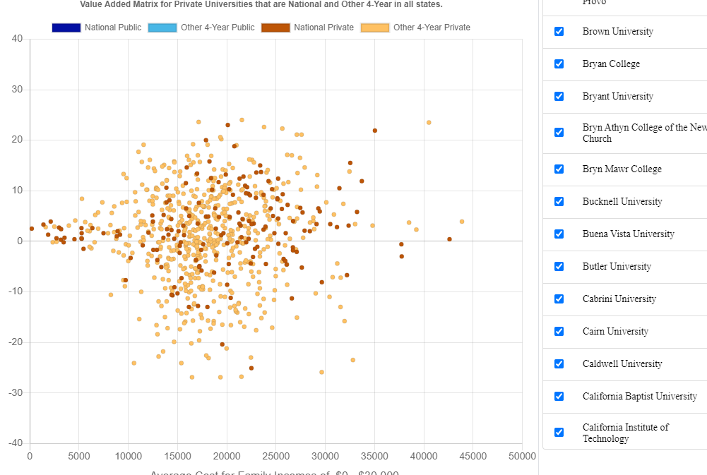

Privilege In, Privilege Out (PIPO)
College graduation rates are primarily a function of accumulated privilege. Most colleges and universities that have high graduation rates aren’t doing anything special, they are just riding the wave of privilege that characterizes their student body. Use our tools to find out how colleges perform on retention and graduation and which ones give you the most for your money.
Learn More

Privilege Busters.
Even though persistence is tied tightly to privilege markers like the SAT, some colleges have figured out how to do better. Use our Valued Added Index (VAI) to find out if your college or university is beating the odds or not, and which ones are the best in the country.
Learn More
Retention and Graduation.
Some schools do better on keeping students in school for a year or two. Others do better at getting their sophomores through to graduation. Find out which ones have managed to put it all together for a truly stellar performance with our Value-Added Matrix (VAM)
Learn More

Find out which schools are doing the best job for the lowest price using our cost look up table and our Cost Value-Added and Cost matrix.
College Cost Table
More for your Money